I have only done one full cosplay to date, but I made a good amount of the get-up and am quite proud of it. I hope to have the time and money to do more in the future; without anywhere to wear my creations, it's a bit of a dull hobby (and conventions are expensive).
Like my miniatures, I did not exactly go into the project from the angle you'd expect. Keeping true to form, I created my cosplay from cardboard, scrap fabric, and a bit of delusion.
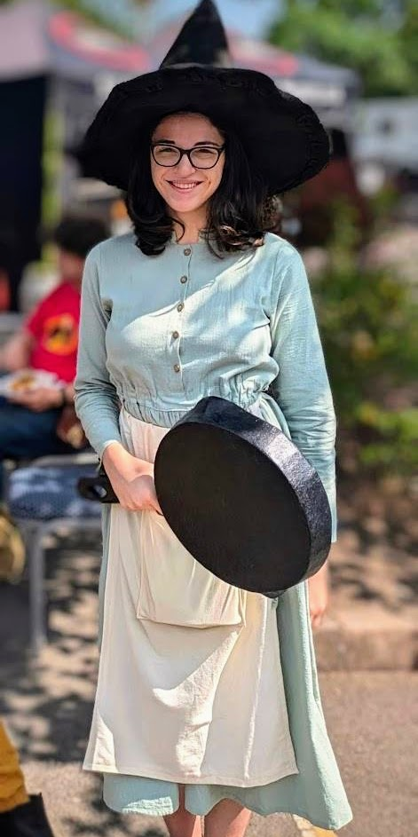
The cosplay I did was of Tiffany Aching, from the Discworld series, for the 2024 Discworld Convention. I made the hat, apron, and the frying pan. I didn't have time to make the dress, unfortunately, but I am happy with what I did do.
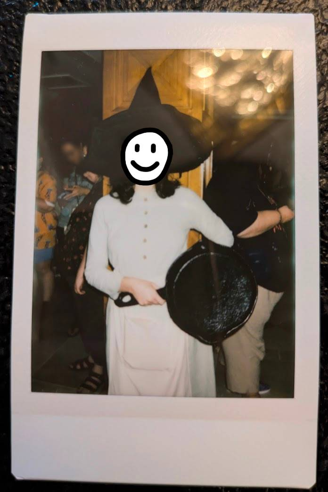
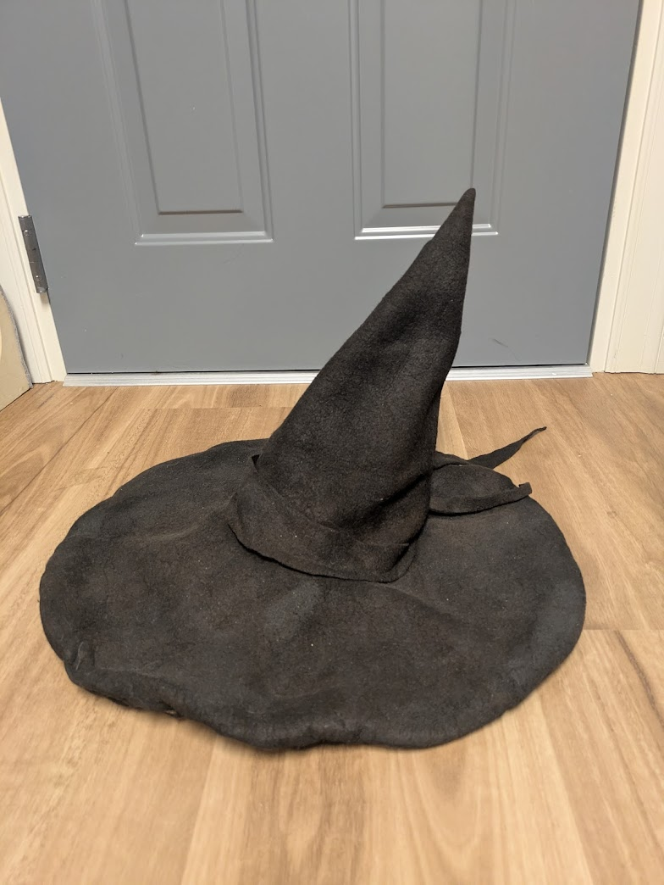
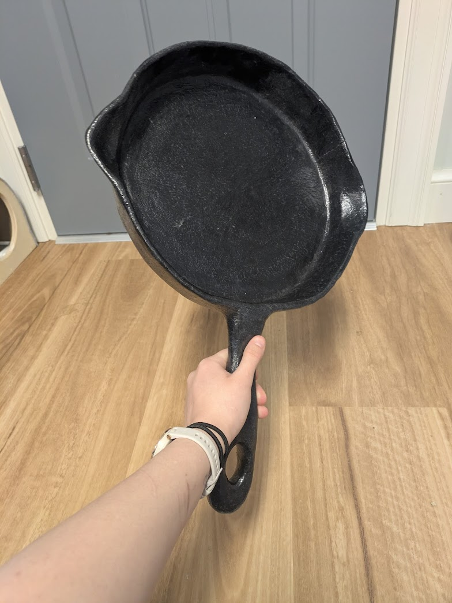
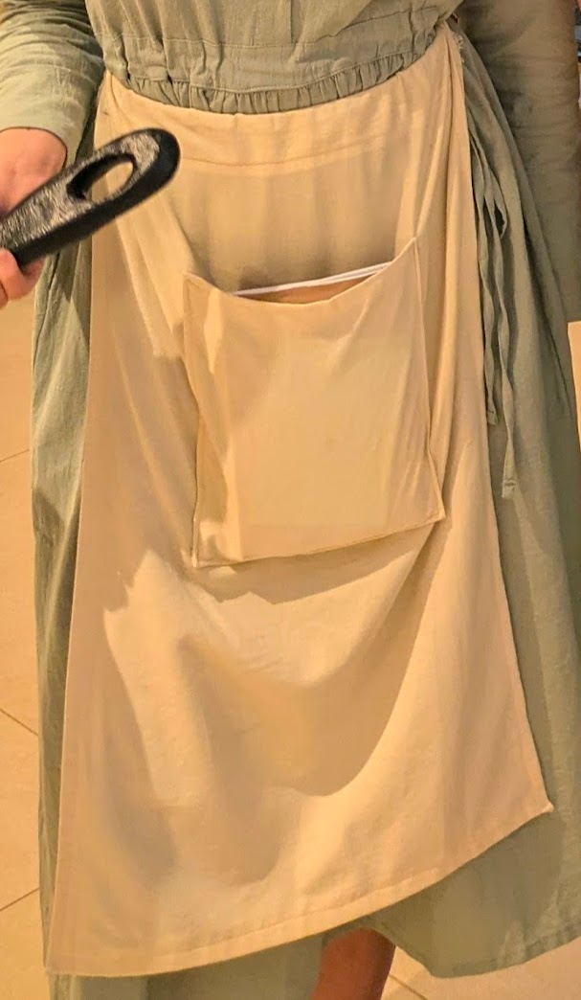
Tiffany's witch hat was made primarily out of felt. I created a wire frame for it, then cut out the right-sized circles of felt and sewed the wires in between two layers. Then, I created a cone out of the felt, and sewed it on.
The cone is kept upright with two wires which meet at the top of it, since it was too floppy alone. It was important that the hat is bendable, because I had to fly with the hat so it had to be easy to pack. The wires let me reshape the hat as needed to pack, while making it easy to keep its shape while wearing.
Once I had the shape of the hat down, I painted it with acrylic paint. The felt I had was a brown color, but I wanted a proper black witch's hat. This also gave me more control over the color, since a pure black felt would not have had enough color variation for the worn-out look I was going for.
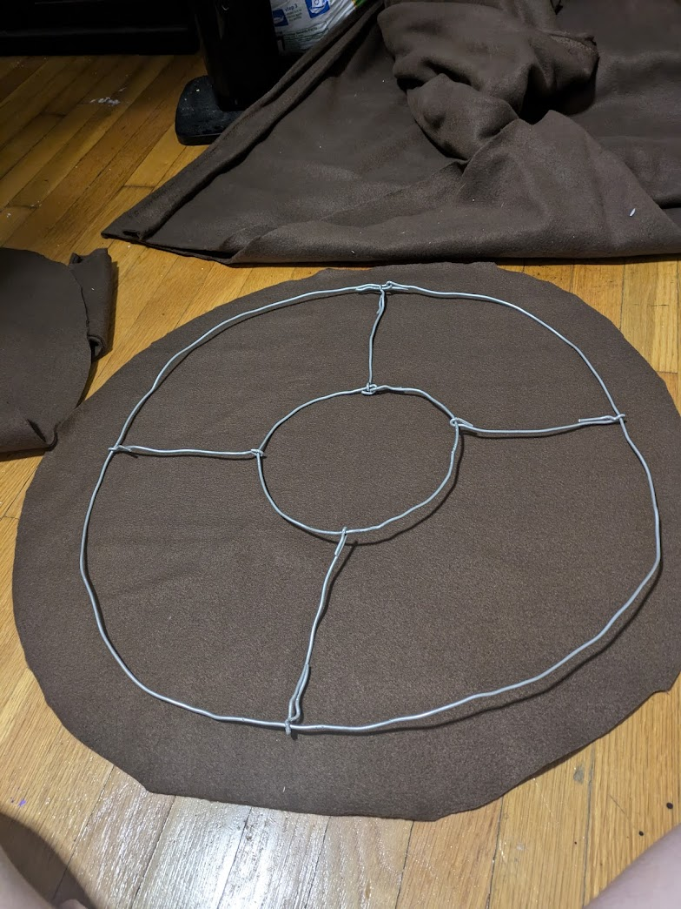
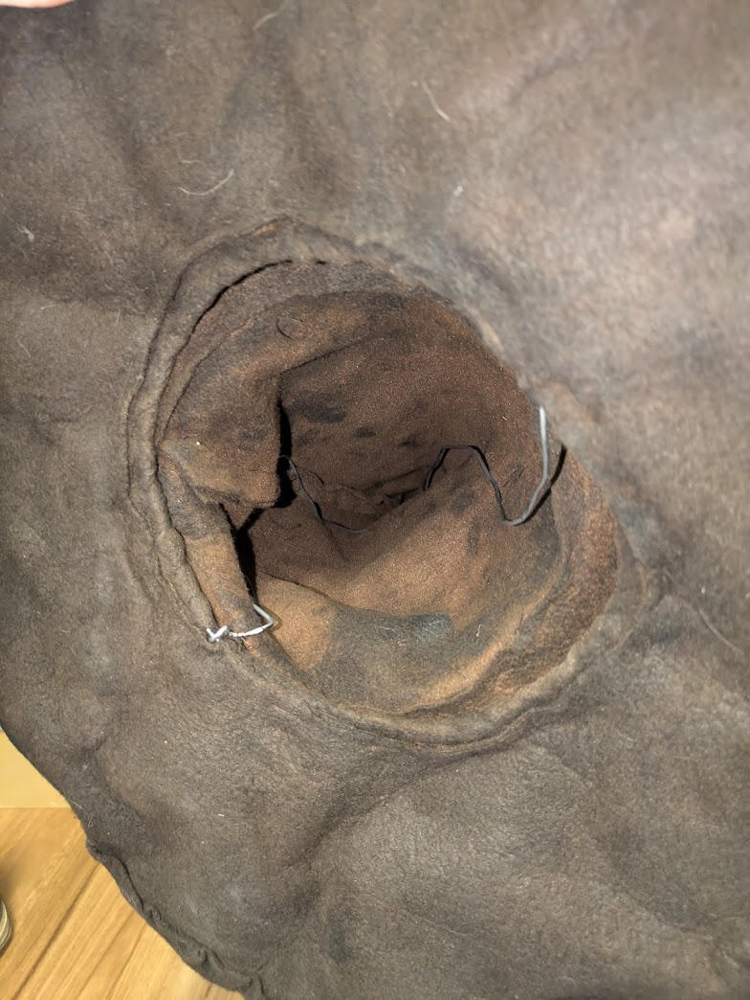
In early books, Tiffany's weapon of choice is a frying pan. This is a staple to make her character recognizable, so I knew I needed it to make the cosplay complete. However, a cast iron frying pan is heavy. Not only am I weak and did not want to carry that around for days in a row, but I also figured it would be considered a weapon by DWCon security. So, I figured... why not just make my own, out of cardboard?
I started with the shape of the pan, cutting a circle out of cardboard. Since the frying pan walls needed to be angled slightly outward, I couldn't use just one piece for the wall, or even a couple big pieces. I cut a ton of pieces, about 2 inches by 1/2 inch, and hot glued them around the edge of the pan. Any large gaps that formed were filled in with smaller pieces of cardboard fit to shape.
Once I had the main shape down (and the handle reinforced with popsicle sticks, since the cardboard wanted to tear), I used spackle to fill in the remaining gaps on the walls and smooth out the entire structure so it seemed like one piece of metal. After sanding the spackle smooth, I used acrylic paint to turn the pan the appropriate black color. By using a sponge on the paint, I was able to get the desired "cast iron" texture with a slight bumpiness to it.
I sealed the whole thing with mod podge so that it wouldn't flake. Unfortunately, this was not enough to prevent a couple of cracks from forming in the walls of the frying pan during transit. Thankfully these cracks are only visible if you're looking for them, so I didn't need to figure out how to fix them on the fly.
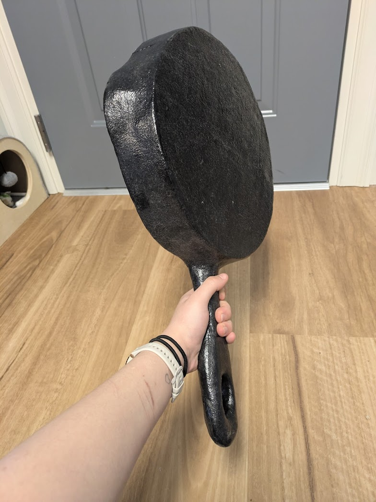
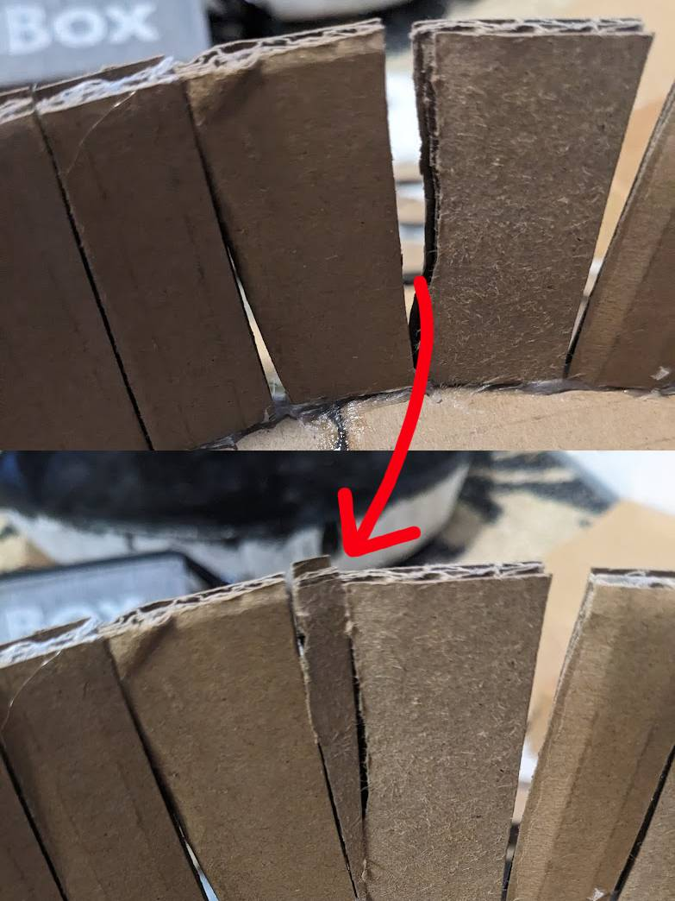
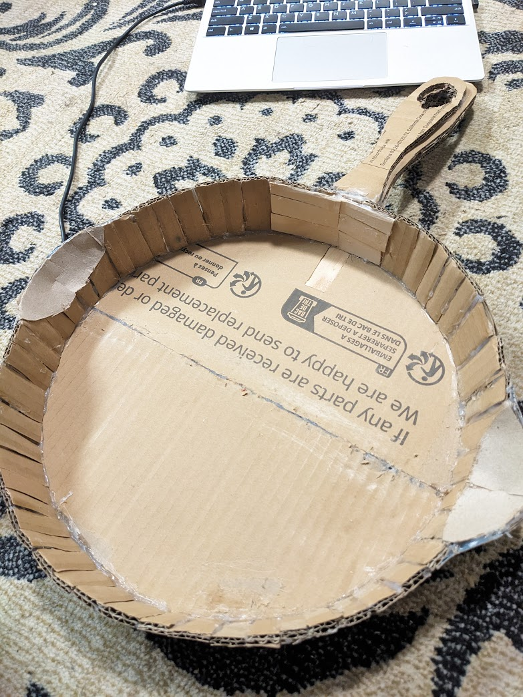
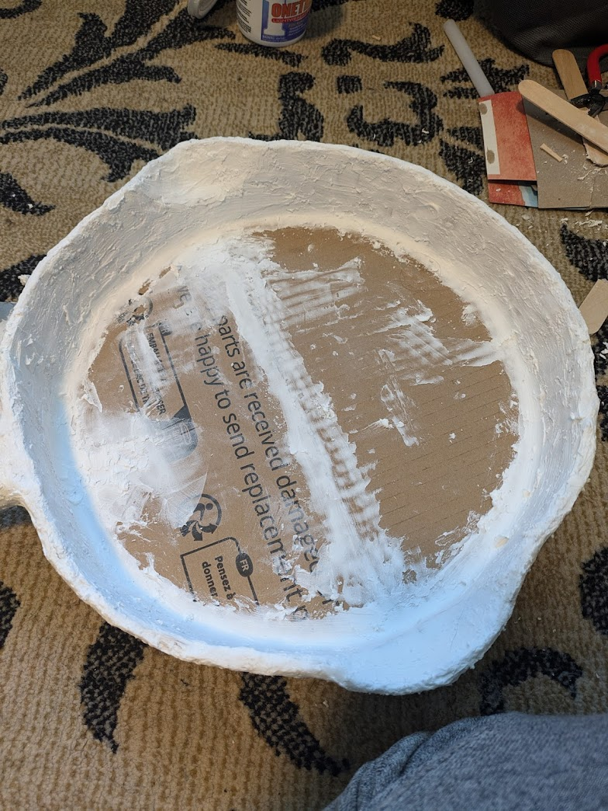
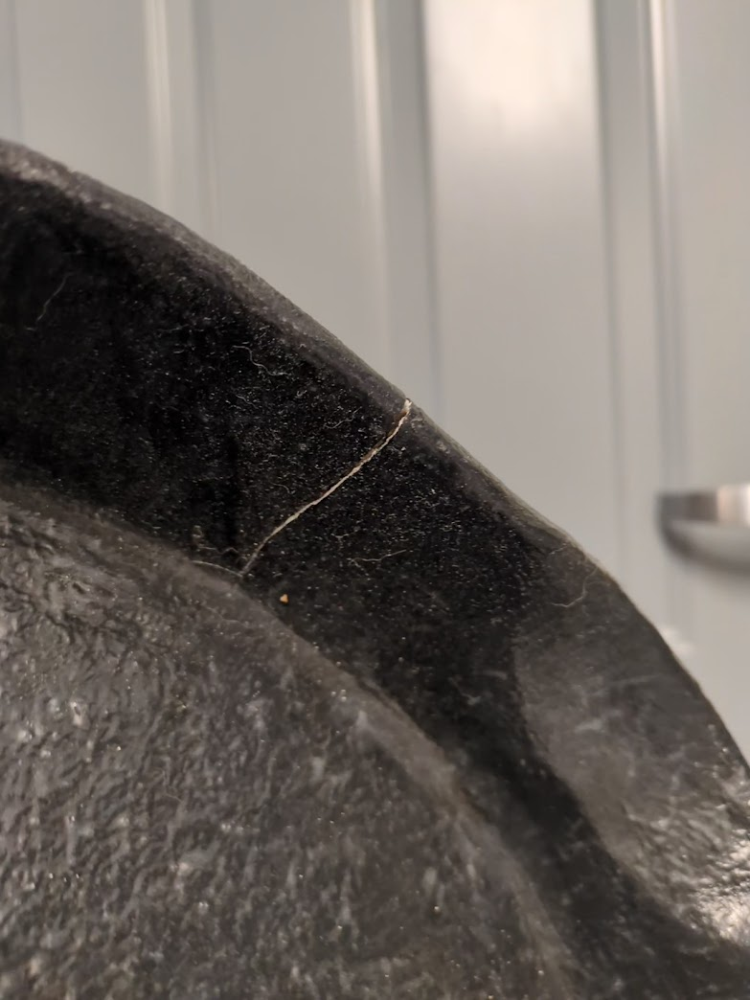
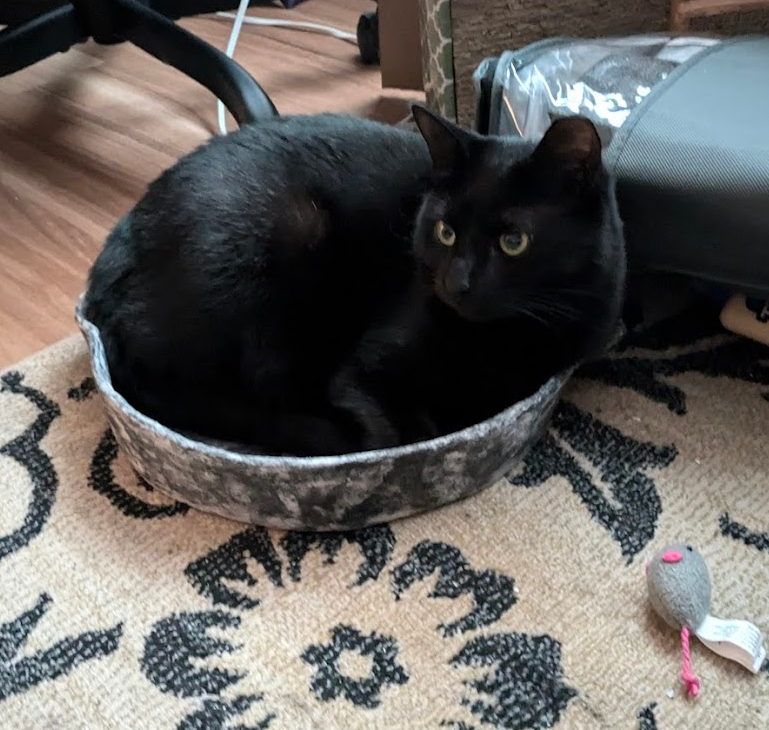
To make the apron, I scavenged in my pile of fabric and scraps until I found an old pillowcase with a stain on one side. It wasn't nice enough for use as a pillowcase anymore, but there was plenty of perfectly good fabric, so it was the perfect option for me to use to make a quick apron.
I ended up using the exact size of the pillowcase, which kept measuring and cutting easy. I just cut off one side of the pillowcase, hemmed it, and added a pocket with a scrap of fabric from the other side. I also cut a long scrap from the extra side, which I turned into the tie around the waist. The tie goes through a channel along the top, which I just created by folding over the top of the apron.
The whole project probably took me about 2 hours, and was hampered more by my old sewing machine putting up a fight than by any actual issues with the project.
Like I mentioned, the dress was not something I was able to make myself, but it was very important to the character that I found something suitable.
I spent hours online looking for something, and settled on a dress from Etsy. The shop was called "CharmWoodSigns", but sadly it looks like they aren't on Etsy anymore.
I picked it because they had a wide range of colors and huge customizability options. I was able to get a 100% linen dress with buttons down the front, and the long sleeves, skirt length, and neckline that would be appropriate for Tiffany's setting.
The dress also has pockets! That was important because I wasn't sure how much space my apron pocket was going to have when I ordered the dress.